第04讲 有理数的加减运算

课程标准 | 学习目标 |
①理解加减法法则 ②掌握运算律并应用 | 1．理解有理数加法和减法法则，将减法转化成加法，初步培养学生数学的归一思想； 2．能利用加法和减法法则进行简单的有理数的加法、减法运算； 3．能掌握加法、减法的运算定律和运算技巧，熟练计算. |

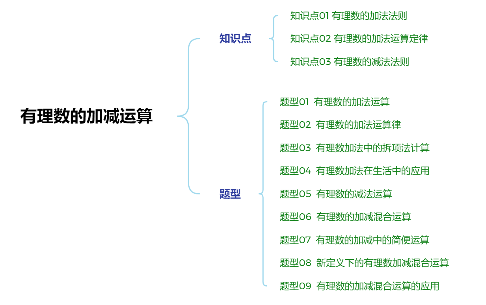

知识点01 有理数的加法法则
⑴同号两数相加，取相同的符号，并把绝对值相加.
⑵绝对值不相等的异号两数相加，取绝对值较大的加数的符号，并用较大的绝对值减去较小的绝对值.互为相反数的两个数相加得0.
⑶一个数同0相加，仍得这个数.
【即学即练1】
1．（23-24七年级上·河南南阳·阶段练习）计算：
(1)
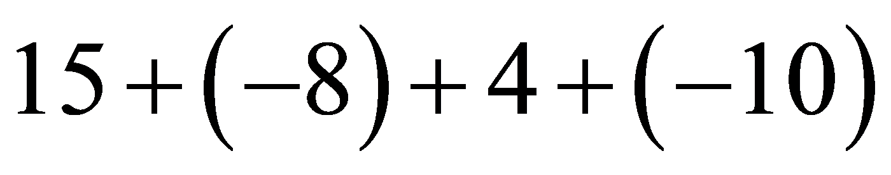
． (2) ．
．2．（23-24六年级上·山东淄博·阶段练习）计算
(1) ；
；
(2) ；
；
(3)
知识点02 有理数的加法运算定律
（1）加法交换律：两数相加，交换加数的位置，和不变.即a＋b=b＋a；
加法结合律：在有理数加法中，三个数相加，先把前两个数相加或者先把后两个数相加，和不变.即a＋b＋c=（a＋b）＋c=a＋（b＋c）；
【即学即练2】
1．（23-24七年级上·湖北·周测）简便计算
(1) ． (2)；
． (2)；
2．（23-24七年级上·全国·课后作业）运用加法运算律计算：
(1)；
(2)；
(3) ．
．
知识点03 有理数的减法法则
减法法则：减去一个数，等于加上这个数的相反数.即a－b=a＋（﹣）b
【即学即练3】
1．（23-24七年级上·四川成都·阶段练习）计算：
(1)
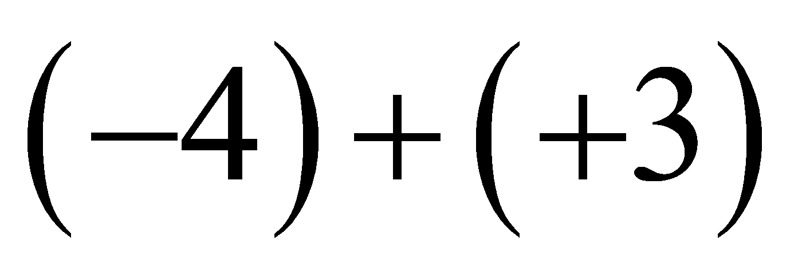
； (2)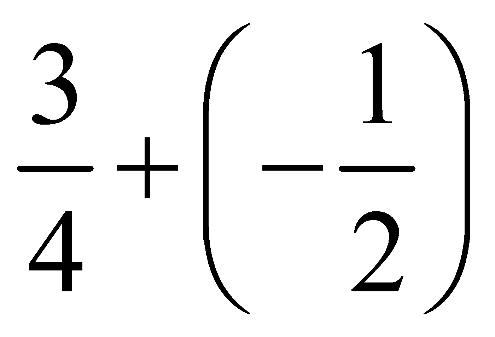
； (3)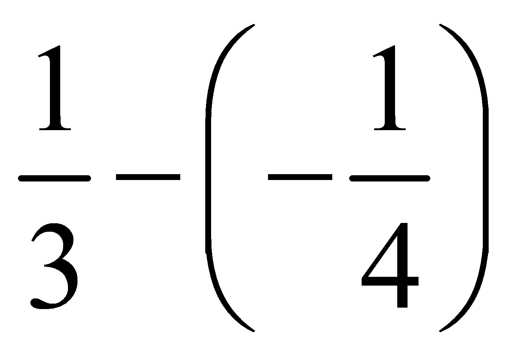
； (4) ．
．2．（24-25七年级上·全国·随堂练习）计算：
(1)
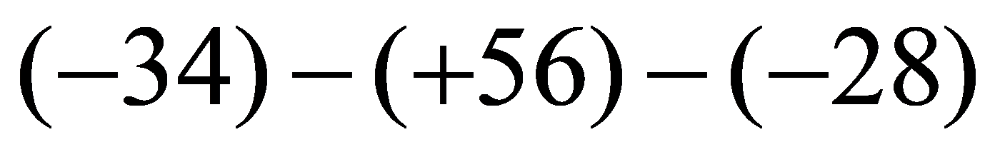
； (2) ．
．
题型01 有理数的加法运算
【典例1】（23-24七年级上·新疆克孜勒苏·阶段练习）计算：
(1) ； (2)
； (2) ； (3)
； (3) ； (4)
； (4)
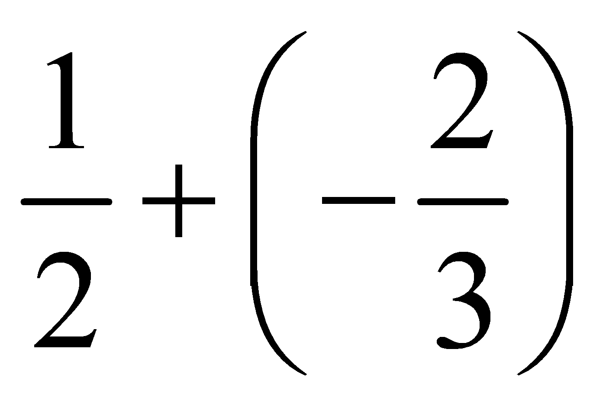
．【变式1】（2023·江苏·七年级假期作业）计算：
(1)
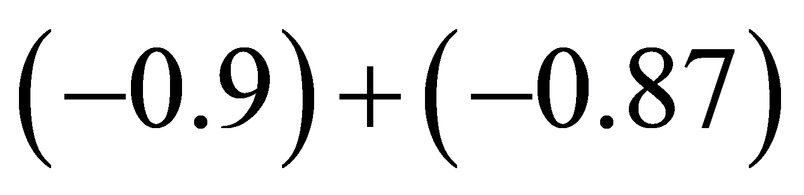
； (2)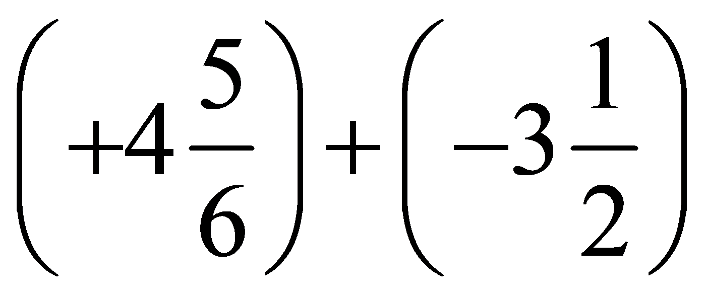
；(3)
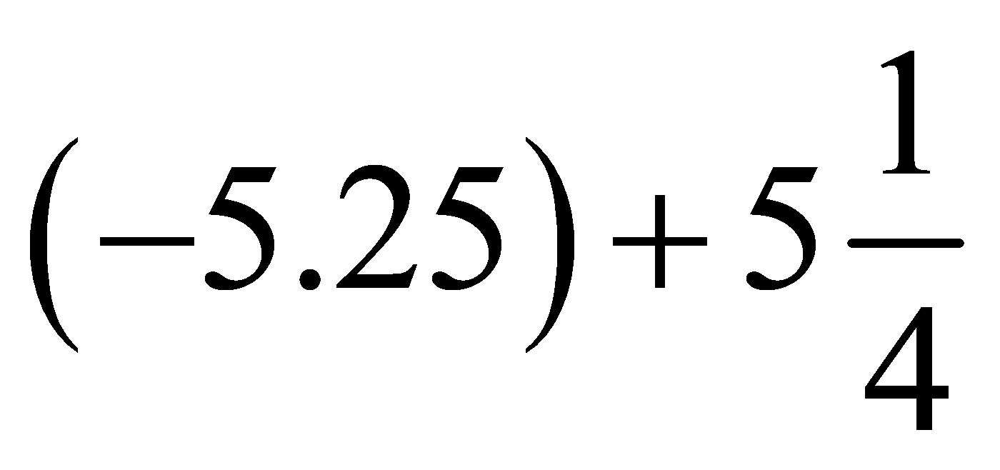
； (4)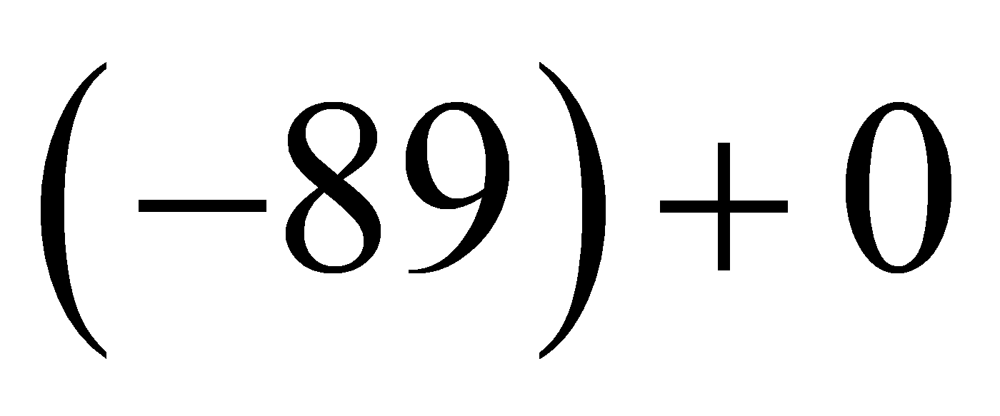
．【变式2】（24-25七年级上·全国·随堂练习）计算：
(1) (2)
(2)
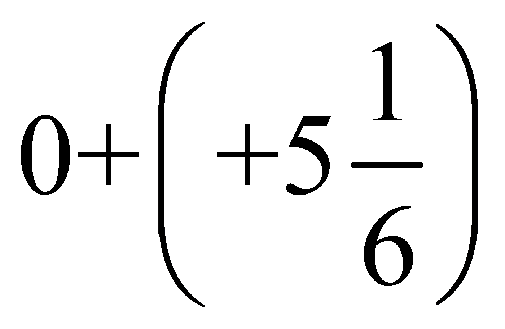
(3)
(4) (5)
(5)
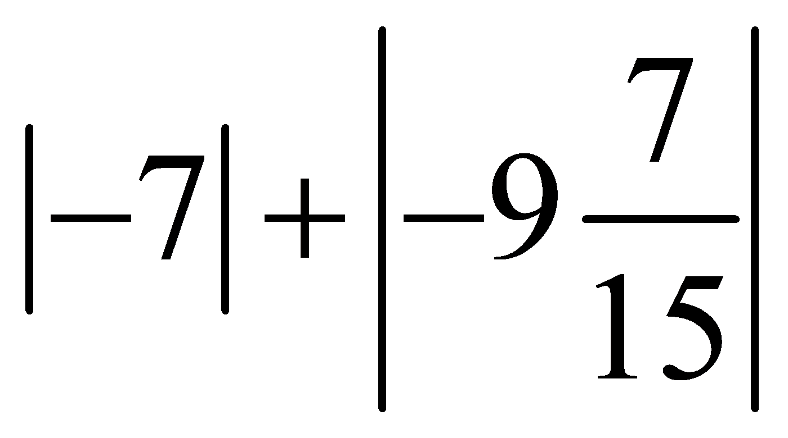
(6)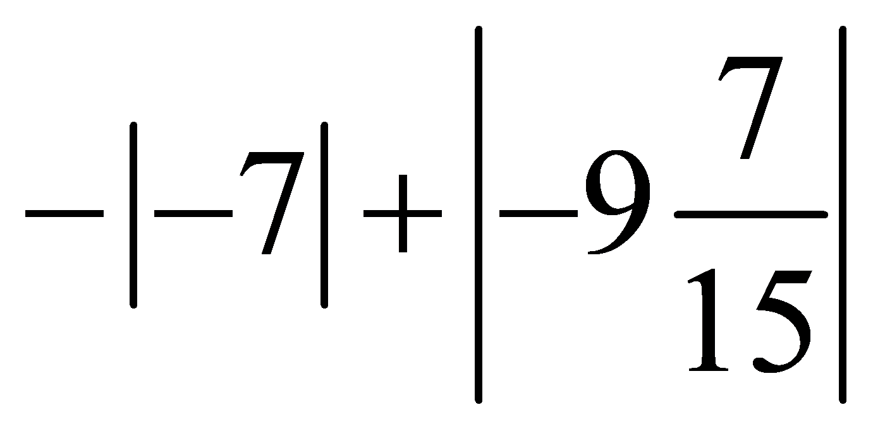
【变式3】（23-24七年级上·山东枣庄·阶段练习）计算：
(1) ； (2)
； (2) ； (3)
； (3) ；
；
(4) ； (5)
； (5)
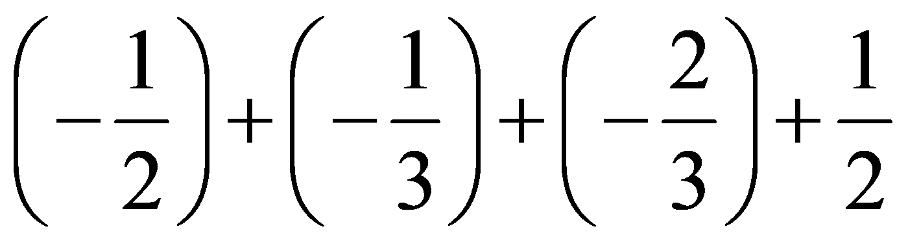
； (6) ．
．题型02 有理数的加法运算律
【典例2】（2023·全国·九年级专题练习）计算：
(1) ； (2)
； (2)
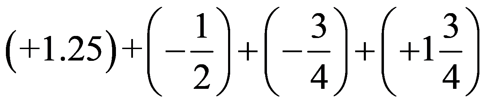
．【变式1】（2023秋·广东梅州·九年级校考阶段练习）计算题：
(1)
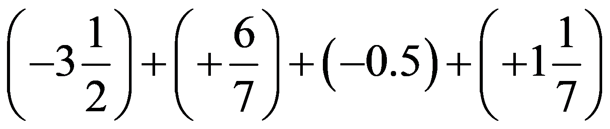
． (2)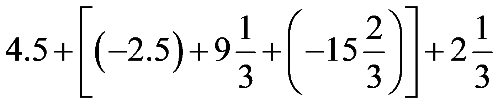
．【变式2】（24-25七年级上·全国·随堂练习）计算：
(1) ； (2)
； (2) ； (3)
； (3) ．
．
【变式3】（23-24七年级上·河北邢台·阶段练习）用适当方法计算：
(1)
(2)
(3)
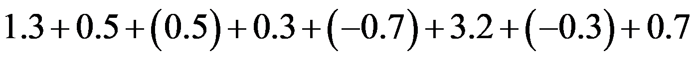
题型03 有理数加法中的拆项法计算
【典例3】（23-24七年级上·河南郑州·期中）阅读下面文字：
对于 可以如下计算：
可以如下计算：
原式
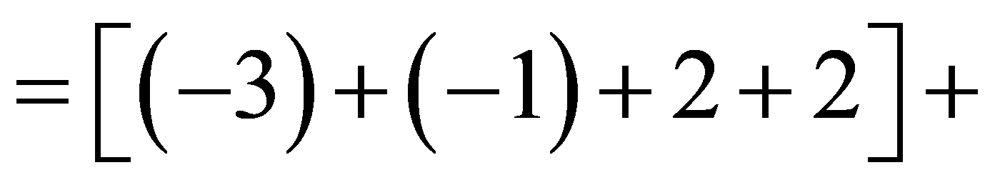
______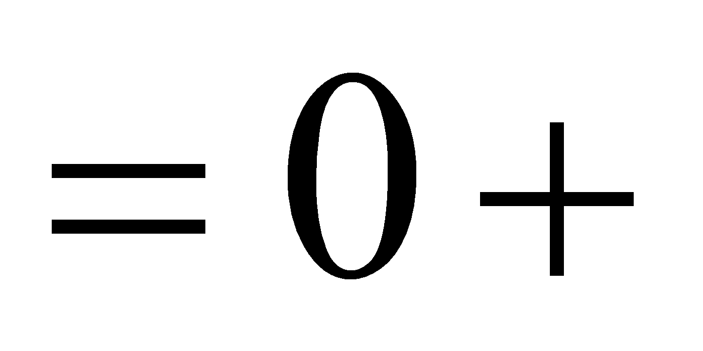
______ ______．
______．
上面这种方法叫拆项法．
(1)请补全以上计算过程；
(2)类比上面的方法计算：
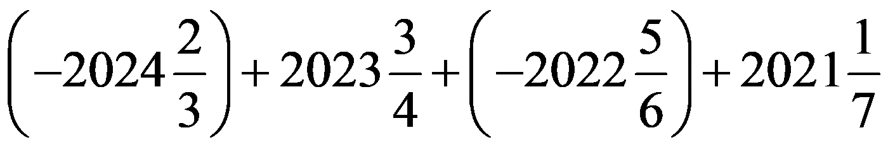
．【变式1】（24-25七年级上·全国·假期作业）折项法计算： ．
．
【变式2】（24-25七年级上·全国·假期作业）拆项法．计算：
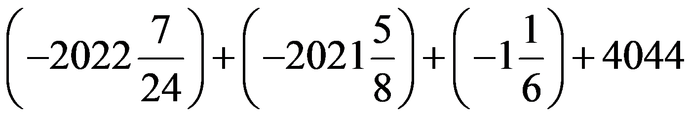
．【变式3】（23-24七年级上·四川成都·阶段练习）阅读计算 的方法，再用这种方法计算
的方法，再用这种方法计算 个小题．
个小题．
【解析】
原式
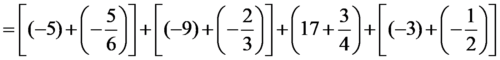
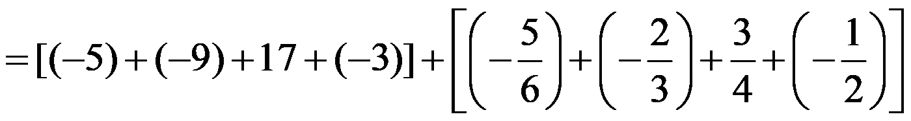
 ，
，
上面这种解题方法叫做拆项法．
(1)计算： ；
；
(2)计算
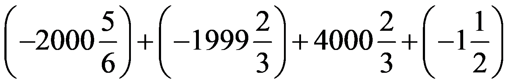
．题型04 有理数加法在生活中的应用
【典例4】（23-24七年级上·贵州黔东南·阶段练习）出租车司机小张某天在路（近似地看成一条直线）上行驶，如果规定向东为“正”，向西为“负”，他这天上午的行程可以表示为： ，
， ，
， ，
， ，
， ，
， ，
， ，
， ，
， ，
， （单位：
（单位： ）．
）．
(1)小张将最后一名乘客送达目的地后需要返回出发地换班，请问小张该如何行驶才能回到出发地?
(2)汽车耗油量为
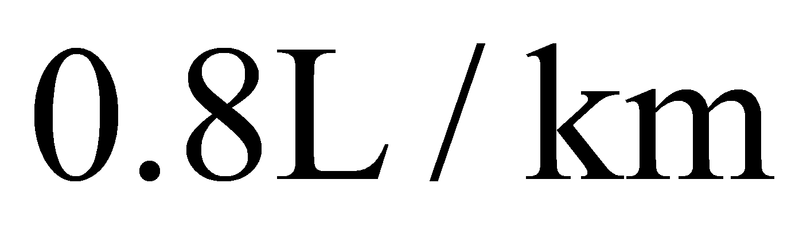
，发车前油箱有 汽油，若小张将最后一名乘客送达目的地，再返回出发地，小张今天上午是否需要加油？若需要加油，至少需要加多少才能返回出发地?若不需要加油，请说明理由．
汽油，若小张将最后一名乘客送达目的地，再返回出发地，小张今天上午是否需要加油？若需要加油，至少需要加多少才能返回出发地?若不需要加油，请说明理由．【变式1】（23-24七年级上·山西太原·阶段练习）“滴滴”司机王师傅上午在东西方向的道路上营运，共连续运载七批乘客．若规定向东为正，向西为负．王师傅营运七批乘客里程如下： ，
， ，，
，， ，，
，， ，
， （单位：千米）．
（单位：千米）．
(1)将最后一批乘客送到目的地时，王师傅位于第一批乘客出发地的什么方向？距离多少？
(2)上午王师傅开车行驶总路程为多少千米？
【变式2】（23-24七年级上·陕西咸阳·阶段练习）某商场9月24日销售衬衫100件，下表是该商场9月25日至9月30日六天的销售变化情况（注：正号表示销售量比前一天上升，负号表示销售量比前一天下降）：
日期 | 9月25日 | 9月26日 | 9月27日 | 9月28日 | 9月29日 | 9月30日 |
销售量/件 |
|
|
|
|
|
|


(1)这六天中哪一天销售衬衫的数量最多？哪一天最少？
(2)若每件衬衫的价格是80元，该商场这六天销售衬衫的总收入是多少元？
【变式3】（23-24七年级上·河南南阳·期中）2023年国庆节，全国从9月29日到6日放假8天，高速公路免费通行，各地景区游人如织．其中某著名景点，在9月29日的游客人数为0.9万人，接下来的七天中，每天的游客人数变化如下表（正数表示比前一天多的人数，负数表示比前一天少的人数）．
日期 | 9月30日 | 10月1日 | 10月2日 | 10月3日 | 10月4日 | 10月5日 | 10月6日 |
人数变化 （万人） |
|
|
|
|
|
|
|


(1)10月2日的人数为______万人．
(2)七天假期里，游客人数最多的是10月______日，达到______万人．游客人数最少的是10月______日，达到______万人．
(3)请问此风景区在这八天内一共接待了多少游客？
(4)如果你也打算在下一个国庆节出游此景点，对出行的日期有何打算？
题型05 有理数的减法运算
【典例5】（24-25七年级上·全国·随堂练习）计算：
(1) ； (2)
； (2)
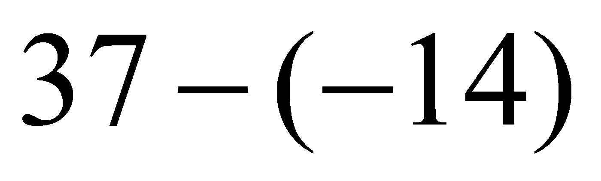
； (3) ； (4)
； (4) ．
．【变式1】（24-25七年级上·全国·随堂练习）计算：
(1)
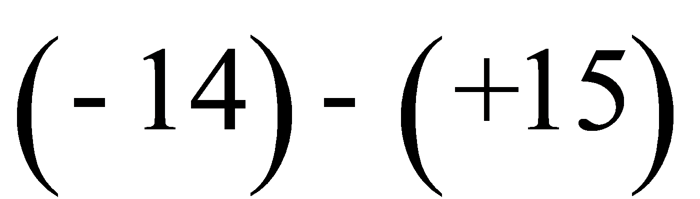
； (2)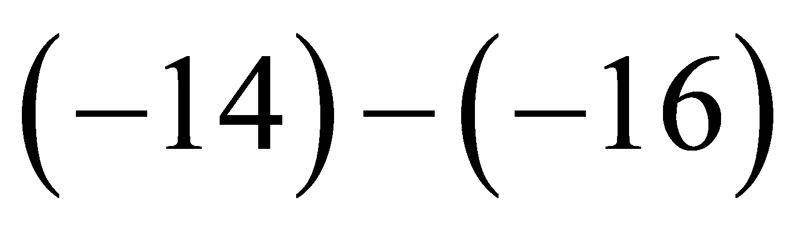
； (3) ；
； (4) ； (5)
； (5) ； (6)
； (6)
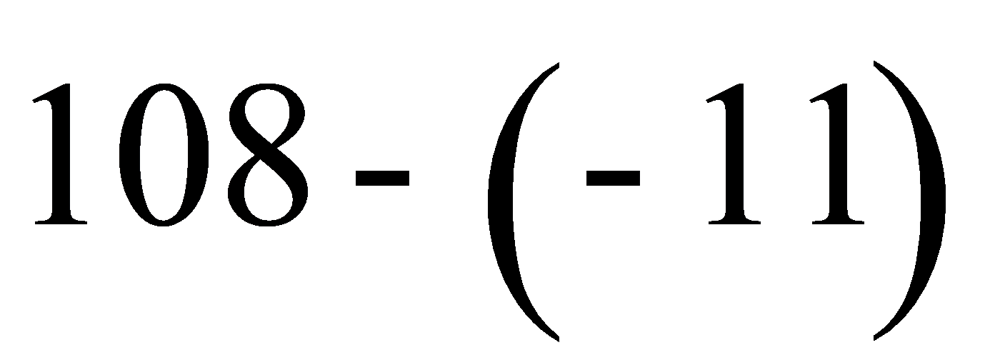
．【变式2】（2024七年级上·全国·专题练习）计算（直接写出结果）:
(1) _______
_______
(2)
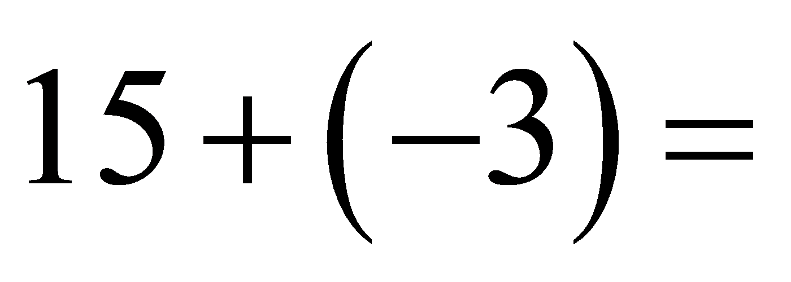
_________(3)
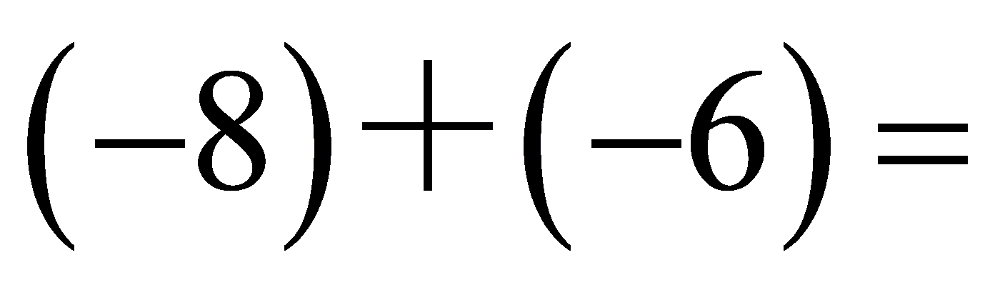
___________(4)
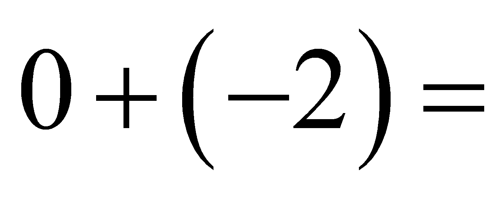
_______(5)
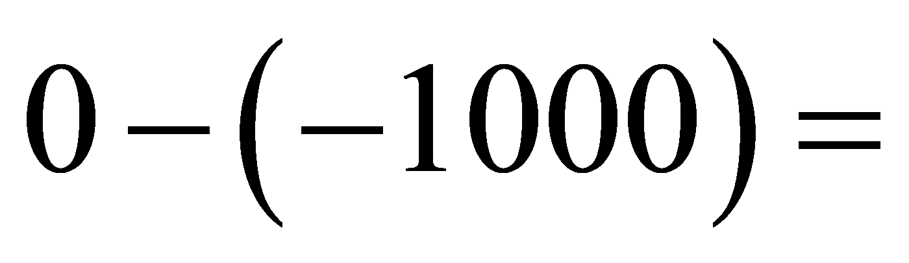
___________(6) __________
__________
(7)
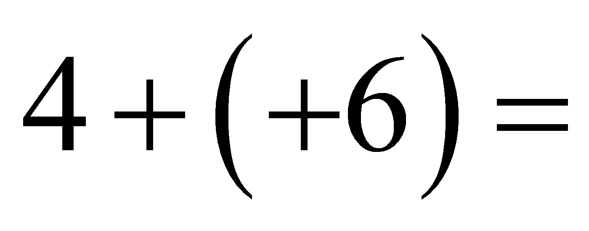
____________(8) _________
_________
(9)
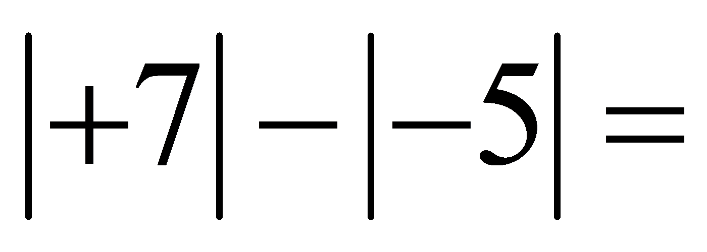
______________(10) _______________
_______________
(11)
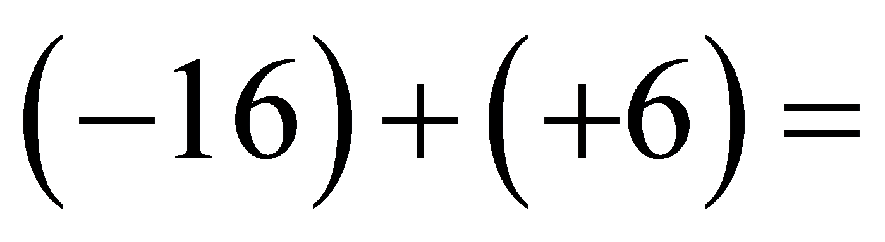
____________(12)
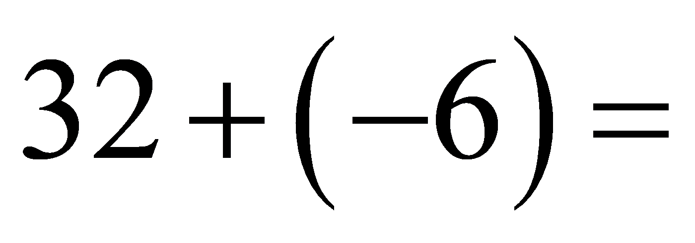
_______________【变式3】（23-24六年级上·山东济南·阶段练习）计算：
(1)
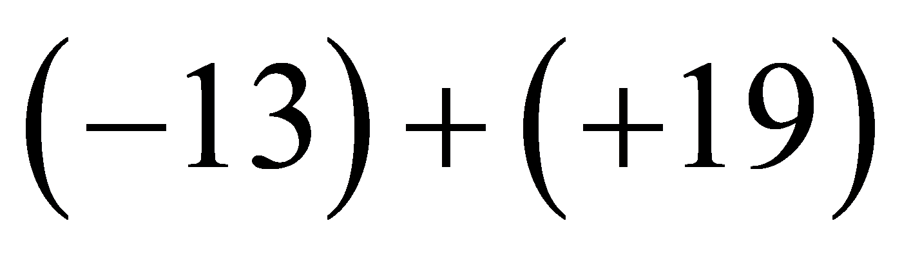
；(2)
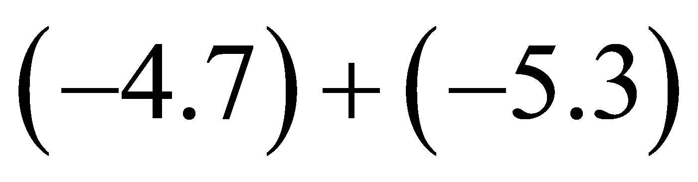
；(3) ；
；
(4)
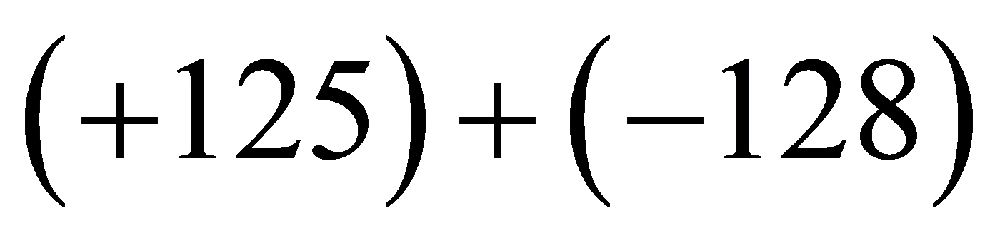
；(5)
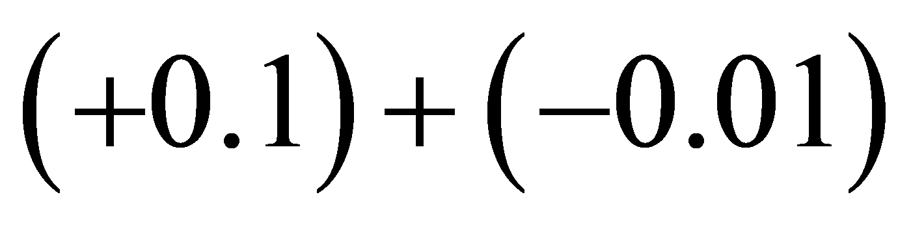
；(6)
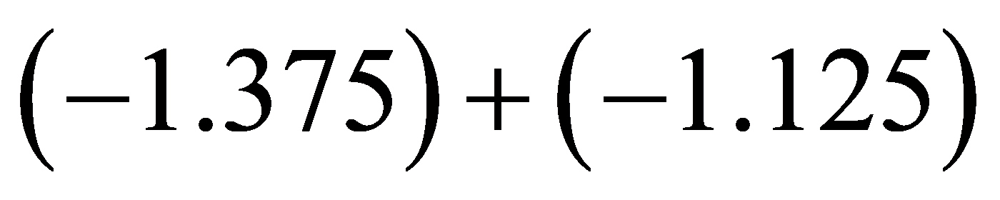
；(7) ；
；
(8)
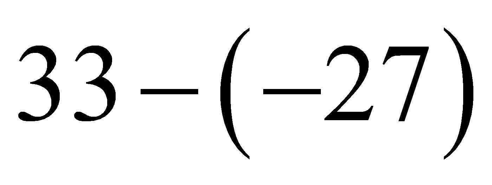
；(9) ；
；
(10) ．
．
题型06 有理数的加减混合运算
【典例6】（23-24七年级上·江西吉安·阶段练习）计算下列各题：
(1)
(2)
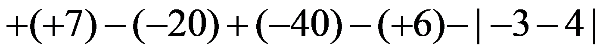
【变式1】（23-24七年级上·陕西西安·阶段练习）计算：
(1) ；
；
(2)
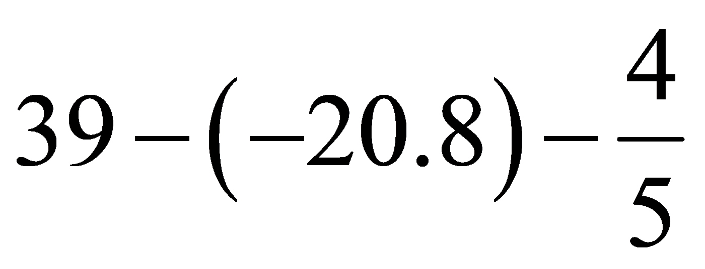
；(3) ；
；
(4) ．
．
【变式2】（23-24七年级上·辽宁葫芦岛·阶段练习）计算．
(1)
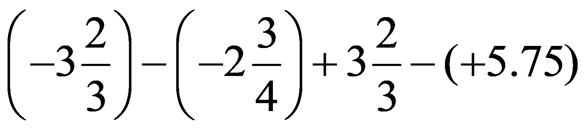
；(2) ．
．
(3) ；
；
(4) ．
．
【变式3】（23-24七年级上·辽宁沈阳·阶段练习）计算：
(1)
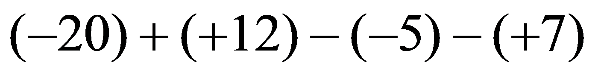
；(2) ；
；
(3) ；
；
(4) ．
．
题型07 有理数的加减中的简便运算
【典例7】（23-24七年级上·陕西渭南·期中）用简便方法计算： ．
．
【变式1】（23-24七年级上·山东德州·阶段练习）计算下列各式：
(1)
(2)
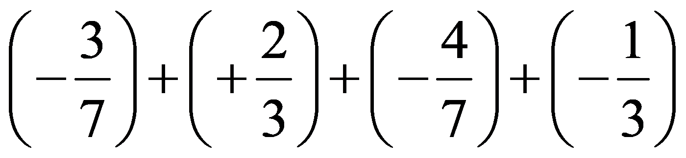
(3)
【变式2】（23-24七年级上·山东菏泽·阶段练习）计算：
(1)
(2)
(3)
(4)
【变式3】（23-24七年级上·山东德州·阶段练习）计算题
(1)
(2)
(3)
(4)
题型08 新定义下的有理数加减混合运算
【典例8】（2022秋·安徽合肥·七年级校考阶段练习）对于有理数a、b，定义一种新运算“ ”，规定：．
”，规定：．
(1)计算的值；
(2)计算的值；
【变式1】（23-24七年级上·湖北宜昌·阶段练习）定义一种新运算：，如，按照上述定义计算下列各式：
(1) ；
；
(2)．
【变式2】（23-24七年级上·河南郑州·期中）定义一种新运算： ，例如：．
，例如：．
(1)计算：；
(2)求 的绝对值．
的绝对值．
【变式3】（23-24七年级上·江苏扬州·期末）对有理数a，b定义了一种新的运算，叫“乘加法”，记作“”．并按照此运算写出了一些式子：
 ，
， ，
， ，
， ，，
，， ，
， ，
， ，……
，……
(1)根据以上式子特点将“乘加法”法则补充完整：
同号得__________，异号得__________，并把绝对值__________；一个数与0相“乘加”等于__________；
(2)根据法则计算： __________；
__________； __________；
__________；
(3)若括号的作用与它在有理数运算中的作用相同，请计算：
①
②
题型09 有理数的加减混合运算的应用
【典例9】（23-24七年级上·河南郑州·期末）小李是一名外卖员，某天中午他骑电动车一直在南北方向的文化路上送外卖．如果向北行驶记作“+”，向南行驶记作“﹣”，这天中午他从集合点出发，行程记录如下（单位：千米）：
，， ，
， ，，
，， ．
．
(1)小李将最后一份外卖送到目的地时，他在集合点的什么方向？距集合点多远？
(2)小李距集合点最远为 ______千米．
(3)若小李在出发时电动车显示剩余电量还能行驶15千米，在中间不充电的情况下，他能否完成上面的行程？请说明理由．
【变式1】（23-24七年级上·江苏连云港·开学考试）下表记录的是我国5个城市某天的最低气温．
南京 | 银川 | 北京 | 杭州 | 连云港 |
|
|


(1)气温最高的城市是 ，气温最低的城市是 ；
(2)将这5个城市当天的最低气温所对应的数据在数轴上表示出来；
(3)连云港与北京的温度相差 °C．
【变式2】（24-25七年级上·全国·随堂练习）某自行车厂一周计划生产1400辆自行车，平均每天生产200辆，由于各种原因实际每天生产量与计划量相比有出入．下表是某周的生产情况（超产为正、减产为负）：
星期 | 一 | 二 | 三 | 四 | 五 | 六 | 日 |
增减 |
|
|
|
|
|
|
|


(1)根据记录可知前三天共生产_______辆；
(2)产量最多的一天比产量最少的一天多生产______辆；
(3)该厂实行每周计件工资制，每生产一辆车可得60元，若超额完成任务，则超过部分每辆另奖15元；少生产一辆扣15元，那么该厂工人这一周的工资总额是多少？
【变式3】（22-23七年级上·广西河池·期中）已知 ，
， 两地相距30米，小猪佩奇从地出发前往地，第一次它后退1米，第二次它前进2米，第三次再后退3米，第四次又向前进4米，按此规律行进，如果地在数轴上表示的数为
两地相距30米，小猪佩奇从地出发前往地，第一次它后退1米，第二次它前进2米，第三次再后退3米，第四次又向前进4米，按此规律行进，如果地在数轴上表示的数为 ．
．

(1)求出B地在数轴上表示的数；
(2)小猪佩奇从A地出发经过第七次行进后到达点P，第八次行进后到达点Q，点P点Q到A地的距离相等吗？说明理由？
(3)若B地在原点的左侧，那么经过100次行进后小猪佩奇到达的点与点B之间的距离是多少？

一、单选题
1．（23-24八年级下·四川成都·期末）计算 的结果等于（ ）
的结果等于（ ）
A． B．
B． C．
C． D．
D．
2．（23-24七年级下·广西南宁·期中）下列运算错误的是（ ）
A．  B．
B．
C． D．
D．
3．（24-25七年级上·全国·随堂练习） 是应用了（ ）
是应用了（ ）
A．加法交换律 B．加法结合律
C．分配律 D．加法的交换律与结合律
4．（23-24七年级上·陕西渭南·期末）如图是一个正方体的展开图，每个面上都标有一个有理数，且相对面上的两个有理数互为相反数，则的值为（ ）

A． B．1 C．0 D．10
B．1 C．0 D．10
5．（23-24七年级上·新疆阿克苏·期末）规定符号 表示两个数中较小的一个，规定符号
表示两个数中较小的一个，规定符号 表示两个数中较大的一个，例如：
表示两个数中较大的一个，例如： ，
， ，则的值为（ ）
，则的值为（ ）
A． B．
B． C．
C． D．
D．
二、填空题
6．（23-24六年级下·上海杨浦·期中）计算： ．
．
7．（2024·福建泉州·二模）某市冬季中的一天，凌晨5时的气温是 ，经过6小时，气温上升了
，经过6小时，气温上升了 ，则此时的气温是
，则此时的气温是  ．
．
8．（23-24七年级上·江西吉安·期末）一辆公交车上原有14人，经过3个站点时乘客上、下车情况如下（上车人数记为正，下车人数记为负，单位：人）：此时公交车上有 人．
9．（23-24六年级上·山东东营·期中）已知 是最大的负整数，
是最大的负整数， 是绝对值最小的整数，
是绝对值最小的整数， 是最小的正整数，则等于 ．
是最小的正整数，则等于 ．
10．（23-24七年级上·四川成都·阶段练习）规定图形 表示运算
表示运算 ，图形
，图形 表示运算
表示运算 ，则 （直接写出答案）
，则 （直接写出答案）
三、解答题
11．（23-24七年级上·山西太原·阶段练习）计算下列各题：
(1) ；
；
(2)；
(3) ；
；
(4) ．
．
12．（23-24七年级上·河南郑州·阶段练习）计算：
(1) ；
；
(2)；
(3)；
(4)（要求用运算律计算）．
13．（24-25七年级上·全国·随堂练习）用合理的方法计算下列各题：
(1) ；
；
(2)．
14．（24-25七年级上·全国·随堂练习）阅读下面的解题方法．
计算：．
解：原式


上述解题方法叫做拆项法，按此方法计算：
 ．
．
15．（23-24七年级上·重庆江北·阶段练习）设表示不小于a的最小整数，如：
(1)求的值；
(2)令 ，求的值．
，求的值．
16．（23-24六年级上·山东济南·期末）邮递员从邮局出发，先向西骑行 到达 A 村，继续向西骑行到达B村，然后向东骑行到达C村，最后回到邮局．
到达 A 村，继续向西骑行到达B村，然后向东骑行到达C村，最后回到邮局．

(1)如图，请在以邮局为原点，向东为正方向，为1个单位长度的数轴上表示出A，B，C三个村庄的位置．
(2)C村离A 村相隔多少千米? ．
(3)邮递员一共行驶了多少千米?
17．足球比赛中，根据场上攻守形势，守门员会在门前来回跑动，如果以球门线为基准，向前跑记作正数，返回则记作负数，一段时间内，某守门员的跑动情况记录如下（单位：  ，
， ，
， ，
， ，
， ，
， ，
， ，
， ．（假定开始计时时，守门员正好在球门线上）
．（假定开始计时时，守门员正好在球门线上）
(1)守门员最后是否回到了球门线上？
(2)守门员离开球门线的最远距离是多少米？
(3)如果守门员离开球门线的距离超过10m（不包括10m），对方球员挑射极可能造成破门，则在这一时间段内，对方球员有几次挑射破门的机会？请简述理由．
18．（23-24七年级上·辽宁铁岭·阶段练习）随着手机的普及，微信的兴起，许多人抓住这种机会，做起了“微商”，很多农产品改变原来的销售模式，实行网上销售，刚大学毕业的小强把自家的冬枣产品放到网上，他原计划每天卖100千克，但由于种种原因，实际每天的销售量相比原计划有出入，下表是上周的销售情况（超额记为正，不足记为负，单位：千克）
星期 | 一 | 二 | 三 | 四 | 五 | 六 | 日 |
与计划量的差额 |
|
|
|
|
|
|
|


(1)根据记录的数据求出销售量最多的一天比销售量最少的一天多销售多少千克？
(2)求上周实际销售总量与计划总量相比，具体增加或减少了多少千克？
(3)上周星期一的前一天小明卖了100千克冬枣，现在用正数表示比前一天多的销售量，负数表示比前一天少的销售量，完成下面的销售变化表（单位：千克）：
星期 | 一 | 二 | 三 | 四 | 五 | 六 | 日 |
实际销售量与前一天相比的变化量 |
|
|
|